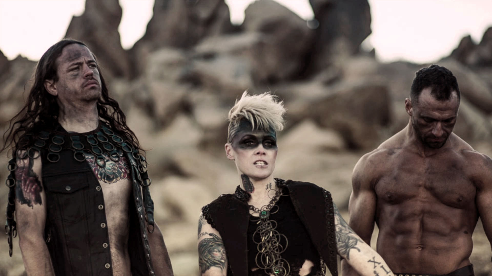
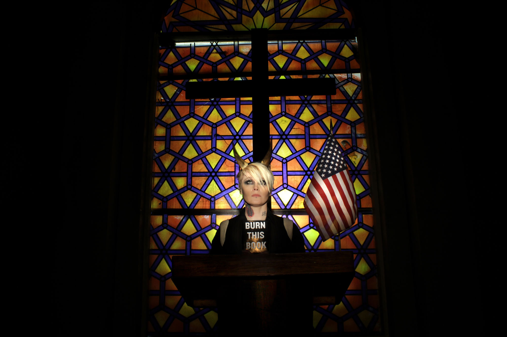

The first time I ever heard of Otep had to be around 2002 or 2003. I was a child then, 11 or 12 years old. Before the Internet was as accessible as it is today, I would learn of new artists through television music channels. This particular day I was watching one of my favorite programs, Headbangers Ball on MTV2, when their first music video "Blood Pigs" began to play. Immediately, I was drawn in by the powerful blast of music that began and the demonic gutturals that cried out within the first seconds.
The selling point for me was when I actually saw the person who was spitting out such animalistic growls: it was a woman. Being a female myself, and always looking for strong female role models, I was immediately smitten with this woman and this band. As a young female metalhead at the time, I had never come across a female fronted metal band. Not only was I drawn to a strong female presence, I was also drawn to their heavily emotionally involved music. You could immediately feel the raw angst and anger through out each riff and each lyrical verse. Being a weird, dark, and artistic kid who struggled with self-understanding and untreated depression, I remember each verse that was grunted made me feel that I was not alone. Seeing that music video that day really changed my life. I felt that for the first time someone else, especially an adult, understood exactly what I was going through.
"It’s fucked up,
I’m different,
words remain,
my only escape"
Otep’s music is self-described as "art core", as well as "heavy mental". Essentially, the band is categorized as nu-metal. Nu-metal incorporates various musical elements such as, heavy metal, grunge, alternative rock, and hip hop. Otep is unique in the fact that they also incorporate spoken word into each album.
The band was formed in 2000 in Los Angeles, California. One of the most intriguing facts about them, is that they were invited to play at Ozzfest before they were even signed with a music label. Apparently, Sharon Osbourne was so impressed by them after seeing one of their live performances that she wanted them to play the world renown festival. Not only did they land a gig at Ozzfest without a record label, when they actually signed onto a label (Capitol Records), they were signed without a demo, and the decision was purely based on a few live performances. Since then, Otep has put out seven albums. Their latest album, Generation Doom, was released last year (2016) in April.

To this day, I still listen to Otep as a type of therapy. For years I have listened to their music when I am down or upset, and each time it brings me out of the darkness. Her words make me feel empowered; that I can do anything I set my mind to. It really helps to see a strong, beautiful, and powerful woman keeping up and even excelling in a male dominated industry. Not only that, but knowing of her dark personal background and seeing her thrive and become stronger as each year and album surfaces, makes me extremely hopeful. I think to myself, "If she can make it through all the bullshit, so can I." Each time I hear Otep’s music, I think of strength from darkness, raw power, and pure ferocity.
One of my personal favorite tracks is called "Self-Made", and it is off of their second album, House of Secrets. This song always makes me feel strong. It is about self-creation and self acceptance. As mentioned earlier, I always struggled trying to figure out who I was as an adolescent. I was ashamed that I battled a darkness that none of my peers seemed to have. This song, and entire album, made me realize that it was okay that I had this dark cloud over me
"I am heartbreak and depression,
Regret without redemption,
A wounded animal,
Afraid of my reflection"
This song always makes me realize that as long as I pick myself up and create myself into who I want to be, that it does not matter how or where I started. I will always hold this song dear to my heart because it has given me the strength to pull myself out from the ashes.
"I’ve built myself out of ash and agony,
I am ready,
I Am I,
I am my own creation,
I am, self-made"
I am still very into Otep and very much enthralled with Ms. Otep Shamaya herself. I still admire her immensely, especially for her personal stances on social issues and the activism she promotes. She is an advocate for animal rights, LGBTQ rights, and women’s rights. She also incorporates her own intense political views into their music as well. I especially admire her openness on taboo issues, most importantly when it comes to sexual abuse/assault. Most bands, especially if they are worried about making it in the music industry, do not touch on such intense issues. Otep, however, has dedicated multiple songs on these issues and is unashamed to share these experiences with others. I believe she promotes healing and strength, especially to the young girls and women who need to hear it from a strong female’s voice.